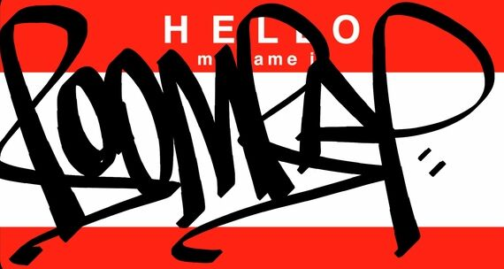
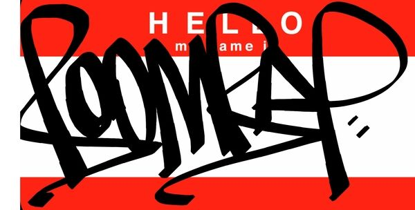
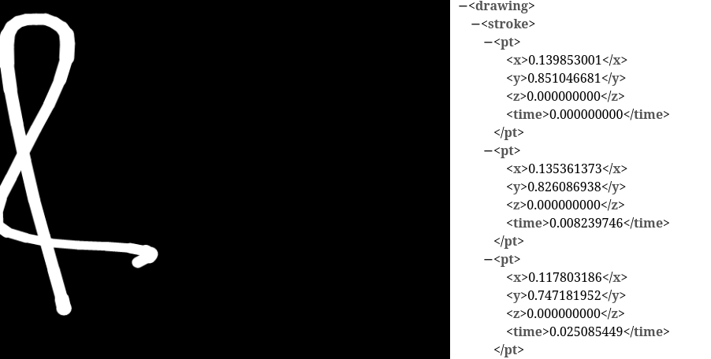
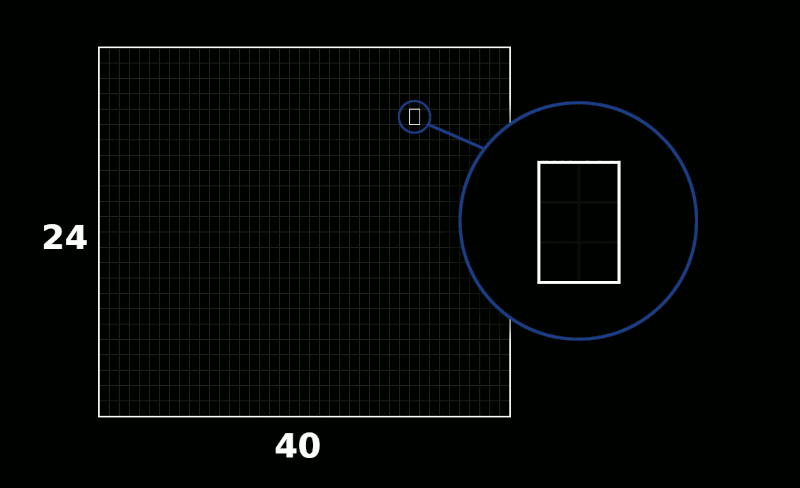
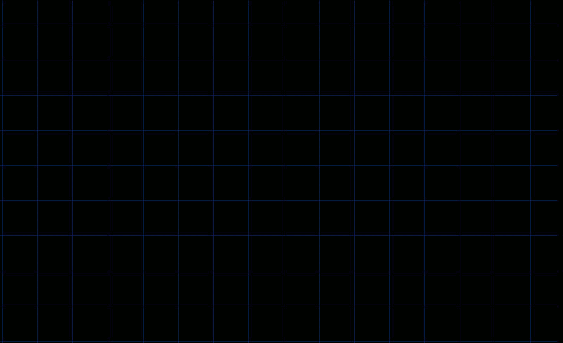
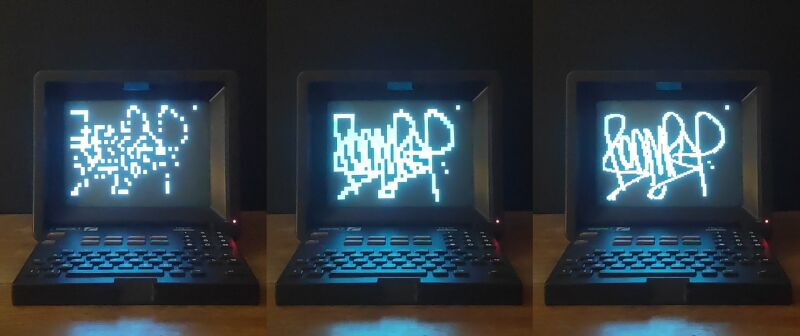

gml2mt
gml2mt is a program that draws tags on a Minitel terminal. Details and the source code are available on GitHub
What is GML ?

GML file uploded by anon-67cd4
GML (for Graffiti Markup Language) is a file format that allows graffiti artists to store tags as computer files. Because these files record the motion of a tag being drawned, they can then be reused in a variety of ways, like tagging robots, large scale projections and a a bunch of other neat stuff. The open repository #000000book allows users to share their work and even though the whole project have been inactive for some time, people still upload new tags every day.
The Minitel
Because of its relative availability (at least in France) and very low-resolution screen, I figured using a Minitel to display street art would be an interesting project. There already are programs that display images on these devices (like this one by phooky), but they usually draw rasterized images. I wanted the Minitel to animate the tag being drawn stroke by stroke. Which meant that I had to write my own code to convert a GML file into drawing instructions that the Minitel could recognize.
How it works
The basic approach
I will use this GML file as an example.

A GML file stores a graffiti as a list of strokes. Each stroke is a collection of points with X and Y coordinates ranging from 0 to 1 (there can also be a timestamp and a Z-coordinate, but these are optional and not used here).

The Minitel screen can display 24 rows of 40 characters each. By sending data through a serial connection we can move a cursor and draw a character anywhere on this 40x24 grid. So drawing a graffiti on the Minitel screen would essentially consists of the following steps :
- Extract the coordinates from the GML file
- Scale each coordinate to match the size of the Minitel screen
- Send commands through the serial port to move the cursor at the right place
- Send a command to draw a point
Doing just that, this is what we get :
This is not quite right. We can guess the general shape of the tag, but a lot of it is missing. This is because a GML file only stores samples of the points that make up a line, and it is our job to fill in the gaps. A simple way to do that is to use linear interpolation : drawing multiple evenly spaced points along a line that goes from one set of coordinate to the next. I arbitrily chose to add 10 points between each sample.
Implementing this gives us the following result :
There it is ! Now we can see the tag being drawn line by line. We could stop here, but this 40x24 resolution really is not that great. Fortunately there is a way we can go beyond this limitation.
Increasing the resolution
The Minitel can display graphics at a higher resolution using special block characters. These are essentially blocks of 2x3 pixels that can either be colored or not. Since each space on the original 40x24 can display one of these 2x3 pixel block, we get a total resolution of 80x72 pixels. Here is a diagram that show every possible block character :

So our program needs to do the following:
- Extract the coordinates from the GML file
- Scale each coordinate to match a 80x72 screen
- Interpolate between each successive point
- "Paint" the graffiti on a 80x72 pixel grid
- Convert the painted pixels into 2x3 blocks
- Send commands to draw the corresponding block character at the correct position on the Minitel
The animation bellow shows how the grid can be converted into 2x3 blocks 
This is what we get after doing all of these steps :
Success! For comparison, here are the results of the three versions side-by-side :

These are the basic workings of gml2mt. There is also some additional stuff (checking which way is up, manage overlapping strokes, etc), but for the most part, this is it.